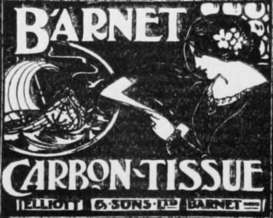

Carbon Printing. Part 2
Description
This section is from the book "The Barnet Book Of Photography", by Herts Barnet. Also available from Amazon: The Barnet Book Of Photography.
Carbon Printing. Part 2
The tissues are made in a variety of colours, the following being those most useful for pictorial work :—
Engraving Black
A good pure black, similar in tone to the black of a print from a steel plate, or closely resembling platinotype when developed in potassium oxalate.
Warm Black
A warmer colour than the preceding, but inclining to a purple-black rather than brown. This colour is richest and most pleasing when a toned paper support is used.
Barnet Brown
A rich deep brown, very similar to the warm brown., in which most etchings are printed. This colour, even more than the preceding, is far more pleasing and rich when toned transfer paper is used.
Sepia
A pure warm brown, very similar in character to the preceding, but warmer in tone.
Warm Sepia
Similar to the preceding, but still warmer.
Terra-Cotta
A good red, inclining to brown, suitable for flower studies, portraits of children, etc.
Red Chalk
A good pleasing red, not so crude in character as red chalk itself.
Although green, blue, purple, and other colours are made, they cannot be recommended for pictorial purposes.
Transfer pap^r has been mentioned in speaking of these tissues. It forms the support of the finished print, the paper on which the film is coated being removed during the after treatment.
The ordinary form of " single transfer " paper is a fine white paper coated with insoluble gelatine. The prepared side is slightly glossy, and prints finished on this dry with rather glossy shadows, but the lighter shades practically matt.
In commencing carbon printing it is necessary to procure some sensitive tissue; it is sold in all the usual photographic sizes, in flat packets of one dozen pieces each; and also a packet of the corresponding size of single transfer paper. This paper must be slightly larger than the tissue, but sufficient allowance is made by the manufacturers when the paper is cut a squeegee, some powdered alum and blotting paper will be required, but nothing else. a solution of alum should be prepared, one ounce in a pint of water, but beyond this no chemical solutions are required. The alum should be dissolved in boiling water, but the solution must be used cold.
The negative should be strong and vigorous, stronger than would give the best result in silver printing, and must be prepared by receiving what is called in carbon printing a " safe-edge." This is some means of protecting the edges of the sensitive tissue from light, so that a margin about an eighth of an inch wide prints white. This safe-edge may be a piece of lantern-slide binding attached to the negative on either the glass or film side, or a mask of opaque paper may be laid in the printing frame, or the negative may be edged with opaque water-colour by means of a ruling pen and brush. In any case the tissue must overlap the mask so that its edges are protected. If a print is being taken from a portion of a negative the cut mask is the only method to adopt. This plan has the advantage that one mask may serve for several negatives.
The carbon tissue, when received, appears most unpromising material, resembling artificial leather-cloth more than photographic printing paper. The gelatine film is coated on a stout paper, so it may be handled freely with the same precautions that apply to other daylight printing papers. The frames should be filled in subdued daylight, the same as for silver printing; but extra care should be taken not to expose the tissue to light more than necessary. Any slight degradation of the lighter work will not fix out as in silver.
The dark side of the tissue should be placed in contact with the film of the negative, taking care that the tissue is so placed that it slightly overlaps the safe-edge all round, and the exposure made to daylight in the same manner as for silver printing.
There is no visible image produced, consequently means have to be devised for gauging the extent to which printing must be carried. The most simple plan for the beginner to adopt is to select a day when the light is fairly uniform, and taking the negative from which the carbon print is desired, take a rough print from a portion on a piece of Barnet P.O.P. If only a portion of the negative is printed it must include some of the lightest work. Expose the silver paper until its appearance is just what is desired in the finished print, not dark enough to allow for reduction in toning, and note how long a time is required to produce this result.
Barnet carbon tissue and Barnet P.O.P. are approximately equal in rapidity, and this time will be the correct exposure for the carbon print. In ordinary practice it is desirable to expose black tissue slightly less than brown, and warm brown or red slightly longer, not because of any actual difference in speed but simply on account of the fact that a black print always appears darker than the same depth of printing in brown or red.
The best time of exposure is one-sixth less than the time of the test print for black, and one-sixth more for red, the test time being the correct exposure for brown. Although there is latitude in development, the more careful the attempt made to expose correctly, the more probable will it be that the print is within the latitude possible for securing a good result.
Although this method is suggested for preliminary attempts, it is not to be recommended for ordinary work. It possesses the distinct disadvantage that a test has to be made every time a print is required, unless the worker be fortunate enough to secure several very similar days. Printing by actinometer is very simple in practice, and in every way preferable. It will be described later.
The prints when sufficiently exposed may be transferred and developed at once. The transfer is rendered necessary by the fact that practically the whole of the surface of the film has been rendered insoluble, while the soluble portion remains at the back, and it is therefore necessary to develop from the back. Transferring is, however, such an exceedingly simple operation that it cannot be said to add any difficulty to carbon printing.
Pieces of transfer paper—one for each print—are soaked in cold water for four or five minutes until quite limp; and it is a good precaution to mark the backs in pencil before putting in water, as the inexperienced may find difficulty in determining which is the face when they are wet. A second dish should be filled with cold water, and one piece of transfer taken from the dish in which all are soaking and placed in this face upwards, and a print put in the same dish face downwards—the face of the print towards the face of the transfer paper. As soon as the print is sufficiently limp, that and the transfer paper are lifted out together placed on a smooth hard surface, the transfer paper underneath, and squeegeed firmly into contact. Too much force should not be used, but fairly firm strokes in each direction along the print. It is better to use a squeegee sufficiently long to cover the print, so that one stroke makes the operation uniform. A roller squeegee is useless.
Barnet Carbon Tissue
Continue to:
Tags
paper, print, negative, exposure, lens, development, camera, focus